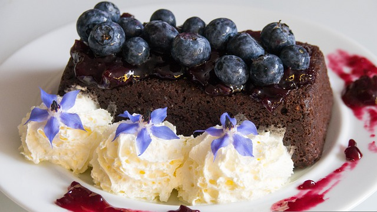

Easy Blueberry Sauce

Made this for my kids to serve over pancakes. Also great as a sauce for grilling. Quick, easy and delicious.
Ingredients
- ¾ cup fresh blueberries
- ½ cup white sugar
- ¼ cup water
- 1 teaspoon cornstarch (Optional)
Steps
- Combine blueberries, sugar, water, and cornstarch in a saucepan; bring to a boil. Reduce heat and simmer until thickened, about 10 minutes.